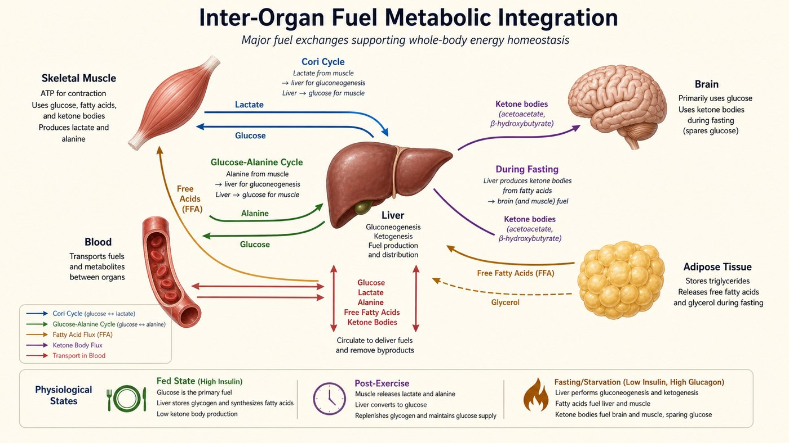
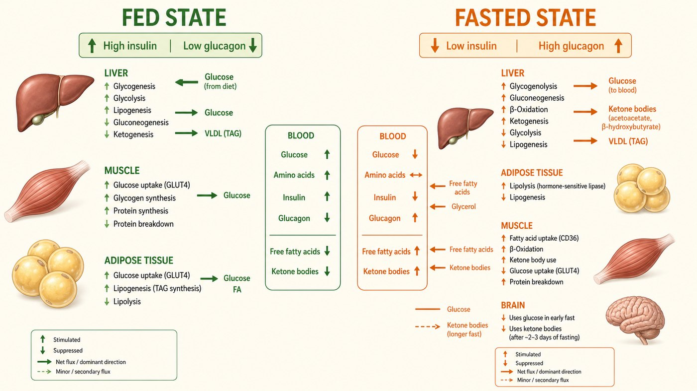

第 17 週
代謝整合與激素調節
Tích hợp chuyển hóa và điều hòa hormone
Mảnh ghép cuối cùng
今天回答這個問題 —— 也把整學期串起來。
Hôm nay trả lời — và nối cả học kỳ lại.
Bẫy: thụ thể vs leptin
接收訊號的。
Thụ thể = receptor
一種激素。告訴大腦你吃飽了。
Leptin = hormone
記法:「瘦」體素跟「瘦」有關。受體是「接受」訊號的。
Từ vựng · 不用背,看過就好
| 中文 | Tiếng Việt | English | 中文 | Tiếng Việt | English |
|---|---|---|---|---|---|
| 激素 | Hormone | Hormone | 飽食狀態 | Trạng thái no | Fed state |
| 受體 | Thụ thể | Receptor | 飢餓狀態 | Trạng thái đói | Fasting state |
| 胰島素 | Insulin | Insulin | 肝臟 | Gan | Liver |
| 升糖素 | Glucagon | Glucagon | 脂肪組織 | Mô mỡ | Adipose |
| 血糖 | Đường huyết | Blood glucose | 糖尿病 | Bệnh đái tháo đường | Diabetes |
糖尿病也說 bệnh tiểu đường。胰島素、升糖素是國際名,不翻譯。
Phân công giữa các cơ quan

每個器官做不同的事。肝是總指揮。
4 vai trò
| 器官 | 角色 | 做什麼 |
|---|---|---|
| 肝臟 Gan | 總指揮 | 調節血糖,做酮體,做尿素 |
| 骨骼肌 Cơ xương | 自己用 | 存肝醣,但只給自己 |
| 脂肪組織 Mô mỡ | 倉庫 | 存脂肪,飢餓時放出 |
| 腦 Não | 大客戶 | 只吃葡萄糖,不能燒脂肪酸 |
Khác biệt quan trọng nhất
肌肉沒有葡萄糖-6-磷酸酶。少了它,葡萄糖出不了細胞。肝有,所以肝的肝醣能給全身。
Cơ KHÔNG có glucose-6-phosphatase. Gan có.
Não là khách đặc biệt
所以飢餓時最大的難題是:怎麼繼續餵腦?
No vs đói

飽食:胰島素:儲存。 | 飢餓:升糖素:動員。
2 chế độ ngược nhau
| 飽食 No | 飢餓 Đói | |
|---|---|---|
| 主要激素 | 胰島素 | 升糖素 |
| 血糖 | 高 | 低 |
| 肝臟 | 吸收葡萄糖,做肝醣 | 放出葡萄糖 |
| 脂肪組織 | 儲存脂肪 | 放出脂肪酸 |
Ra lệnh thế nào?
切換酵素:開或關。
Thêm/bỏ phosphate → bật/tắt enzyme
一個激素能同時控制很多酵素。
1 hormone điều khiển nhiều enzyme
Đái tháo đường
不能用葡萄糖 → 燒脂肪 → 酮體(酸)過多 → 血液 pH 下降 → 酮酸中毒。
Không dùng được glucose → đốt mỡ → nhiễm toan ceton
| 第一型 Type 1 | 第二型 Type 2 | |
|---|---|---|
| 問題 | 胰島素做不出來 | 有胰島素,細胞不理它 |
| 原因 | 免疫破壞胰島細胞 | 長期肥胖 → 受體遲鈍 |
| 結果 | 血糖高,細胞沒糖用 | 一樣 |
Cả học kỳ trong 1 hình
| 週次 | 學了什麼 |
|---|---|
| 1–5 週 | 蛋白質:結構決定功能 |
| 6–7 週 | 酵素:讓反應變快,而且可以被調控 |
| 8、10–11 週 | 其他分子:醣、脂質、核酸 |
| 12–16 週 | 能量:三種燃料 → 乙醯CoA → 循環 → 電子鏈 → ATP |
| 17 週 | 調控:誰決定燒哪個、什麼時候燒 |
生化不是一堆零散的路徑。它是一個工廠。
Bài tập: Đúng hay sai
肌肉的肝醣可以放出葡萄糖到血液。
胰島素的作用是儲存。
腦平常主要燒脂肪酸。
第二型糖尿病是因為做不出胰島素。
想一想:飢餓三天,你的腦在吃什麼?身體怎麼辦到的?
下週 · Tuần sau
期末考(第 18 週)
Thi cuối kỳ (Tuần 18)
▶
範圍:第 10–17 週為主,含前段核心概念
Phạm vi: tuần 10–17
▶
題型:標圖 40%、配對 20%、選擇 20%、計算 20%
Dạng đề: ghi nhãn, nối, chọn, tính
▶
文字題可用中文/英文/越南語作答,不因語言扣分
Có thể trả lời bằng tiếng Việt